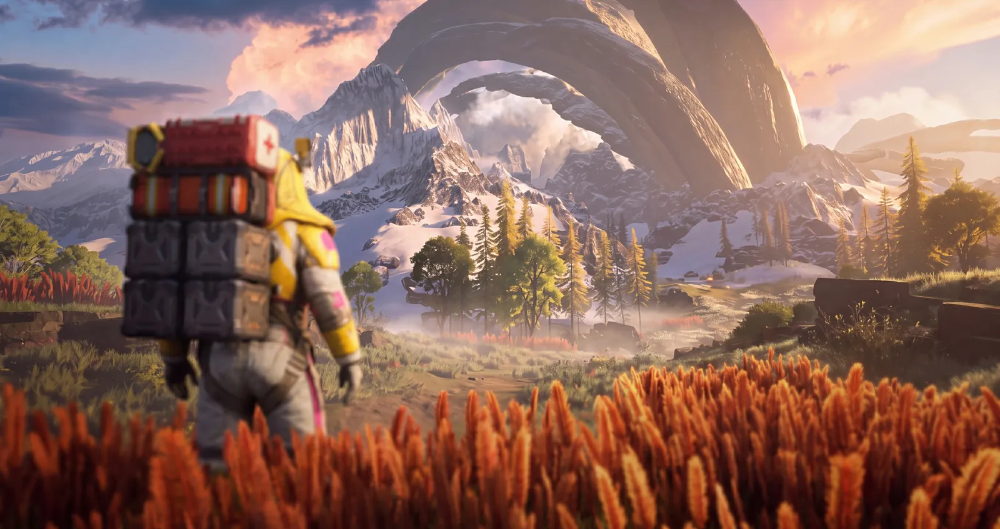
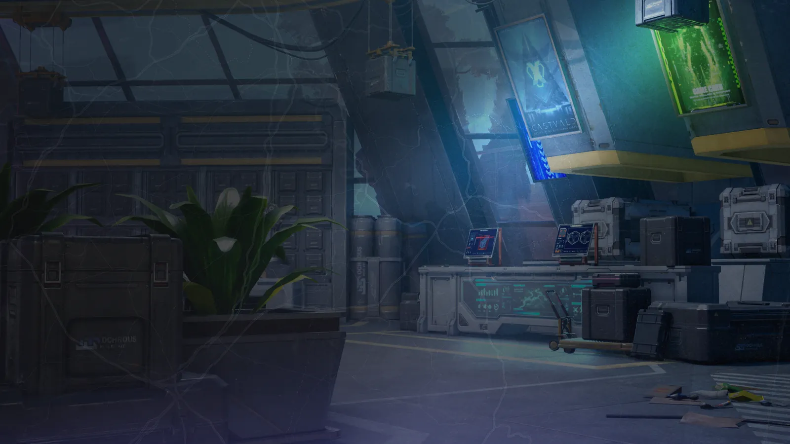
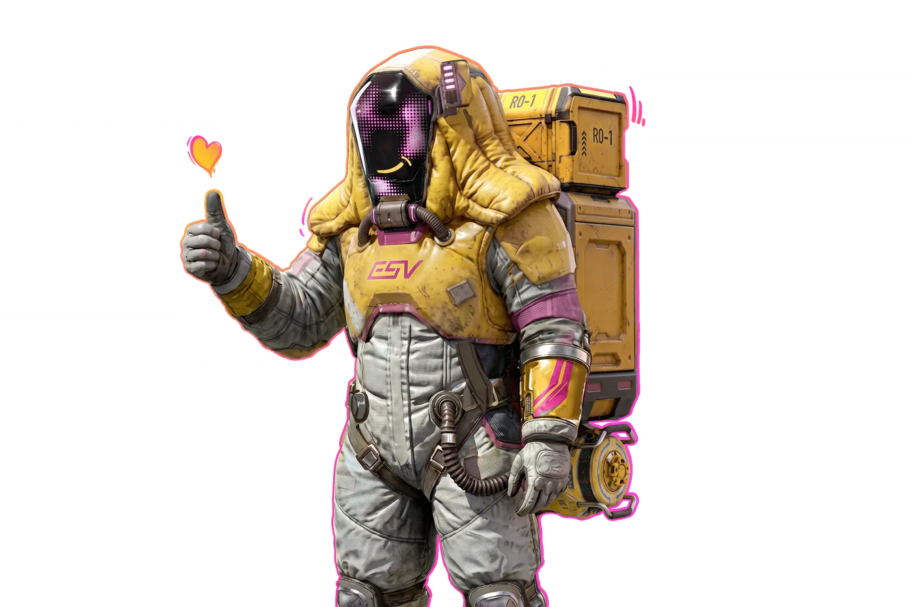
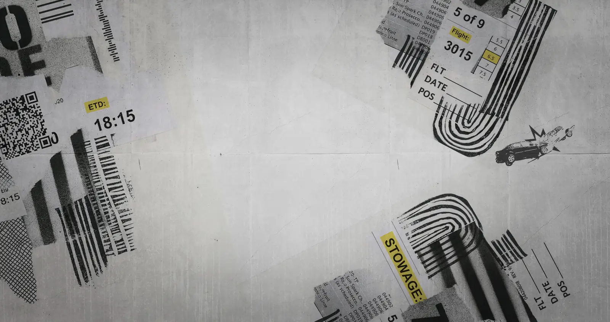
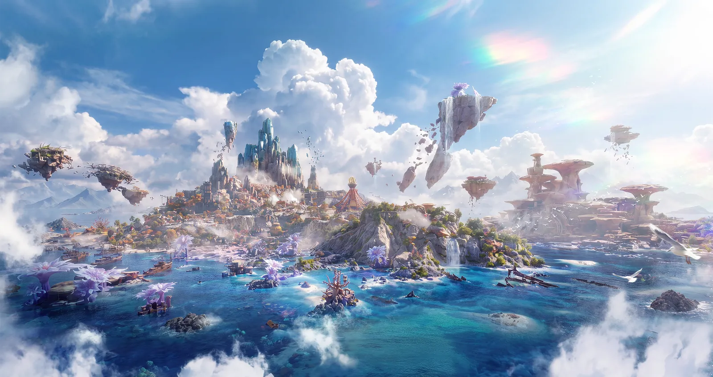

Livrer. Survivre. Évacuer.
Ce qu'on sait officiellement, et tout ce que les fichiers du patch ajoutent.
FarLands est le prochain mode de FragPunk, attendu en accès anticipé le 5 novembre 2026. Bad Guitar le présente comme une expérience multijoueur à haut risque centrée sur la livraison Officiel
Les fichiers du patch du 22 octobre en montrent beaucoup plus. On y incarne un coursier d'Eastvale Logistics, nouveau chef du Hub 9. On accepte des commandes, on part dans des éclats hostiles avec la cargaison sur le dos, on fouille, on se bat contre des monstres et d'autres joueurs, puis on rejoint un point d'évacuation pour rentrer au hub avec son butin. Bref, un mode d'extraction PvPvE avec une couche de gestion Textes du jeu
En interne, le mode s'appelle HappyLand (préfixe HL). Le patch a ajouté 76 823 fichiers, presque tous pour FarLands Fichiers
Rien de tout cela n'est sorti : le contenu peut encore changer avant le lancement.
Description du mode dans le jeu
Accroche du mode
Accroche du mode
Message d'interface
Comment lire ce site
Chaque citation du jeu affiche sa clé source (le petit badge gris) : un clic ouvre la ligne correspondante dans l'explorateur de textes, qui lit le fichier _tous_les_textes_du_jeu.tsv.
Le bouton FR / EN en haut à droite bascule entre la traduction française du jeu et la version originale anglaise. La VF des fichiers est encore brute : noms qui changent d'une ligne à l'autre (« Marcheur de frontière », « Boundary Walker »…), quelques contresens. En cas de doute, l'anglais fait foi.
Le lancement prévu dans les fichiers
Un premier jour raté
Le tutoriel du mode, reconstitué avec ses textes et ses cinématiques.
Depuis le second Smash-Up, le Shardverse est en miettes. Eastvale Logistics, l'autre méga-groupe d'Acme face à Kepler, veut relier les éclats entre eux et recrute à tour de bras.
Vous êtes la recrue envoyée par le siège pour diriger le Hub 9, un dépôt en ruine dans le Secteur périphérique, loin d'Acme. Le premier jour, votre appareil s'écrase dans les montagnes enneigées. Il reste à livrer la toute première commande, seul, avec un colis sur le dos Textes du jeu

Et ensuite : deux chapitres en vue
Cinématiques
Les vidéos du mode présentes dans le patch : l'intro du chapitre 0, le niveau de boss, l'emballage des colis et l'effet d'évacuation.
Le Hub 9
Entre deux expéditions, tout se passe ici : commandes, stockage, fabrication, entraînement.
Le Hub 9 est le point de départ de toutes vos opérations. On y prend les commandes au terminal, on range son butin dans l'entrepôt, on fabrique armes, équipement et véhicules, on démonte ce qui ne sert plus et on s'entraîne en salle tactique Textes du jeu
À votre arrivée, vous scannez votre visage et enregistrez votre nom dans le système pour prendre officiellement la tête de la station. Ensuite, le hub monte d'une à cinq étoiles, et chaque palier débloque de nouveaux types de commandes, de la place, des véhicules et des plafonds de rareté.
Les textes parlent tantôt d'Eastvale Logistics (logo ESV), tantôt de FarDash Logistics (logo FDH sur les caisses). Probablement un nom qui a changé en cours de route Non vérifié
Journey

Les habitants du hub
Installations
Les écrans de montée en niveau du hub montrent ses boutiques et ateliers (cliquer pour agrandir) :
D'une à cinq étoiles
Ce que débloque la montée en niveau :
Les cinq raretés du mode :
Les règles du terrain
Ce que le tutoriel et les astuces du jeu expliquent, système par système.
Le tutoriel en images
Commandes et marché
Six types de commandes, des clients plus ou moins pénibles, et des prix qui bougent selon les événements.
Chaque commande fixe une exigence de Perfection, des frais de port et un délai. Les descriptions ci-dessous viennent d'une table dont la VO n'existe qu'en chinois : on affiche la traduction française du jeu, avec le chinois en dessous Textes du jeu
Les clients
| Personnalité | Comportement |
|---|
Événements du marché
Ils s'affichent sur la carte et font varier l'offre et les prix des marchandises :
L'emballage des colis
Avant de partir, il faut emballer : un mini-jeu de grille où l'on range les objets dans la boîte de livraison. Une chaîne automatisée d'emballage existe aussi, avec sa propre vidéo et un type de commande « Automatic packing orders! » Fichiers
Description d'objet : le drone de transport
Survivre dehors
Le temps change en cours de partie, et la salle tactique du hub fait progresser votre coursier.
La météo évolue au fil de la partie. Les tempêtes accumulent des cumuls : une fois la jauge pleine, vous perdez de la vie en continu. Se mettre à l'abri ralentit l'accumulation. Certaines météos s'en prennent aussi au magnétisme ou à vos objets Textes du jeu
Les noms et les descriptions de météo sont dans des lignes séparées : nous les avons associés d'après leur contenu Association
Journey
Salle d'entraînement tactique
Quatre catégories : . Chaque entraînement améliore une statistique du coursier.
Véhicules
Fabriqués au hub, modifiables, avec carburant, coffre et passagers.
Noms tirés des textes du jeu. L'image de chaque véhicule est associée d'après son apparence : sûre pour la trottinette, l'autruche, le quad et le camion, probable pour les deux tout-terrain.
Statistiques
Pièces et modifications
Le monde
Les zones jouables, leurs lieux et les cartes reconstruites depuis les fichiers.
Lieux
Plus de 50 lieux décrits dans les textes, entre la ville d'Harmony Town (Secteur périphérique) et Akhet, l'éclat de Kemet où se trouve le Port côtier.
Le jeu range les noms et les descriptions dans des lignes séparées : nous les avons associés d'après leur contenu Association
Cartes reconstruites
Aperçus en 3D des cartes du lobby (le hub suspendu au-dessus des nuages) et du chapitre 0 (la ville du canyon), reconstruites à partir des fichiers Fichiers
Factions
Bestiaire
Bêtes mutées, robots de Kepler, gangs et envahisseurs.
Regroupement par faction fait par nous d'après les noms Non vérifié
81 monstres en 3D
Les modèles des monstres sont codés (N1xxxxx, N2xxxxx…) : leur correspondance avec les noms n'est pas établie. Cliquer pour les manipuler en 3D.
PNJ
Commanditaires, marchands et personnages croisés en mission.
Portraits des commanditaires
51 bannières de commandes, numérotées comme les PNJ des quêtes (orques, hommes-poissons, crabes, requins, charognards, gens de Kemet…).
Ils ont dit
Équipement
Le kit du coursier, les tenues, 71 ensembles d'équipement, les plans de fabrication et les armes.
Le kit du coursier

Création du coursier et tenues complètes
Ensembles d'équipement
71 ensembles, avec des bonus à 2 et 4 pièces. En voici une sélection :
Les bonus révèlent un vrai système de combat élémentaire (feu, glace, électricité, acide, radiation, explosion), avec réactions, Bris, saignement et parade parfaite :
Plans de fabrication
Armes
74 rendus d'armes propres au mode : pistolets et fusils (base BW001 à BW016), haches, lances, arcs, arbalètes, couperets, et leurs skins WS5xxx.
Lore
Documents du jeu sur Eastvale, Kepler, Mariana, les Chelae et Aesir. Cliquer pour lire le texte intégral.
Tout explorer
Les sources brutes, consultables directement.

Textes du jeu
Recherche dans les textes FarLands (FR et EN), ou dans les 67 714 lignes du fichier complet.

Galerie
Écrans de chargement, décors, interface, armes, véhicules, plans, portraits.

Modèles 3D
Monstres, PNJ, armes, véhicules et tenues, à faire tourner dans le navigateur.